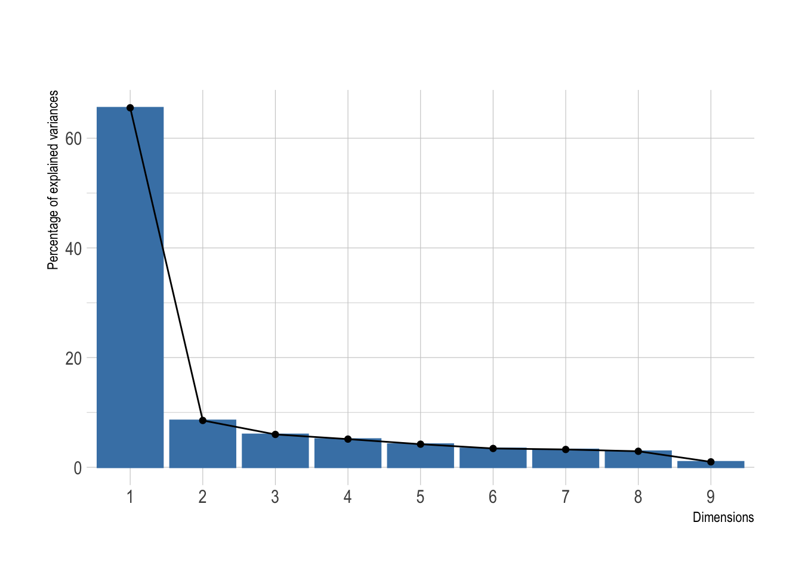
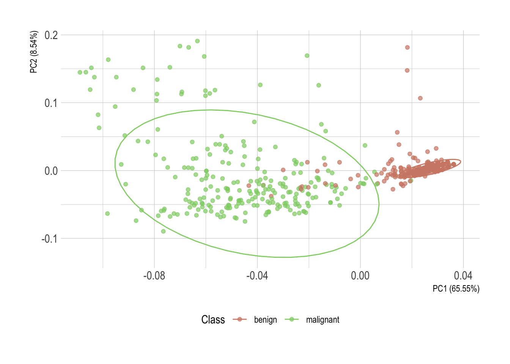
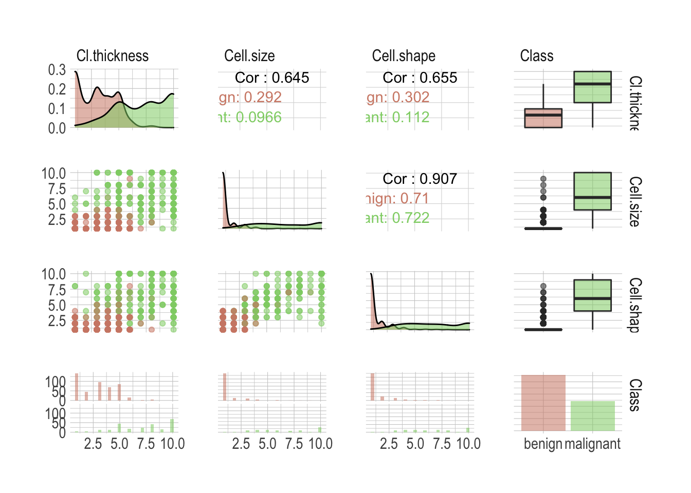
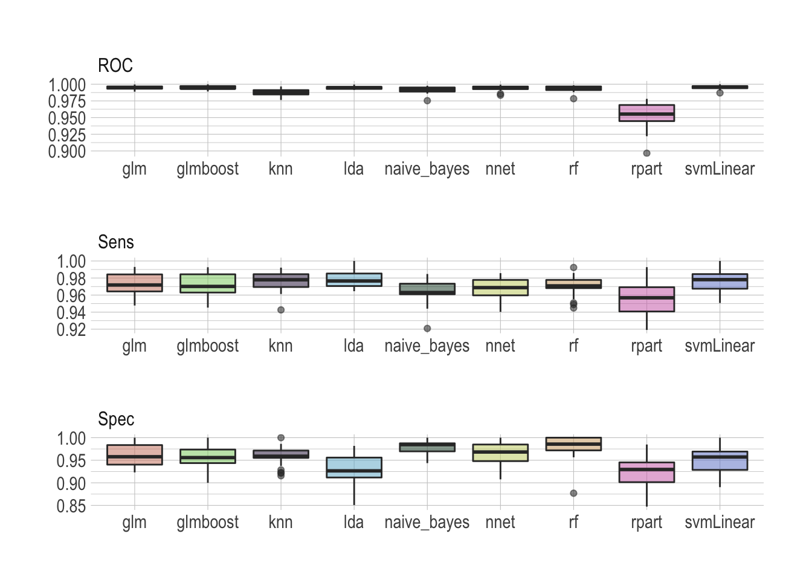
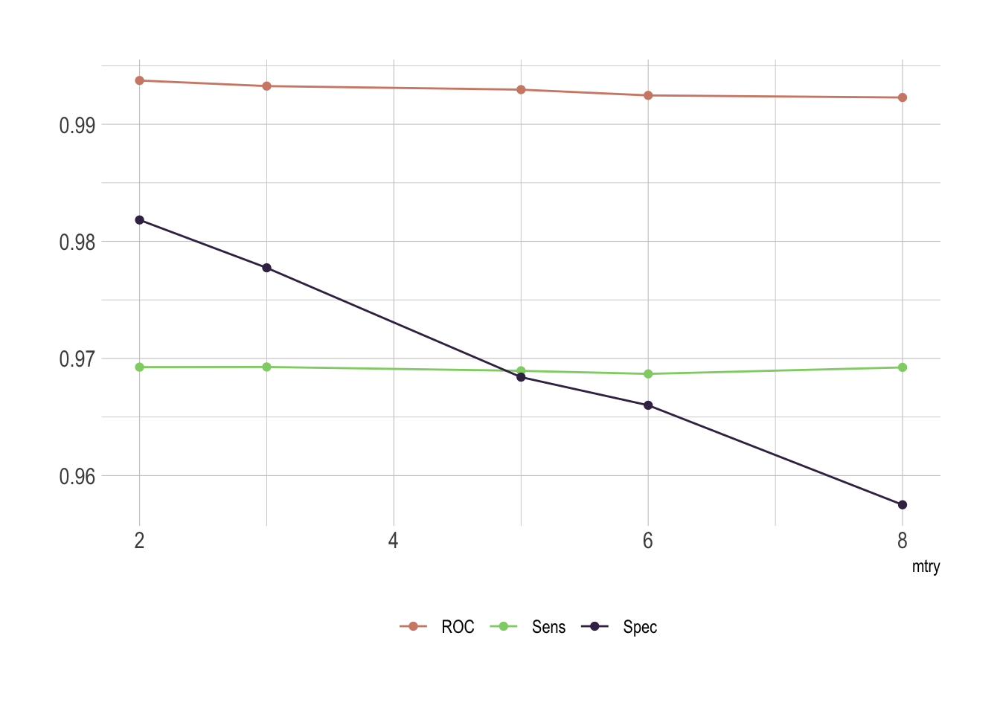

If you ever happen to present abnormal findings on cancer screening, chances are further investigations will be ordered. The surgical removing of a piece of the suspicious lump will allow examination under the microscope after the specimen has been processed and histological sections have been placed onto glass slides. A pathologist will study the tissue and look for manifestations of disease in order to identify malignancy. As you can guess the process is quite time consuming as each sample has to be investigated and scored individually.
Actually, we face a typical binary (or binomial) classification problem, where the task is to classify the elements of a dataset into two groups. The mlbench package contains such a dataset that can be used to evaluate possible automation. The Wisconsin Breast Cancer Database contains clinical cases with several attributes and one target class. In the medical field, accuracy is usually not enough and we will be looking for the probability estimates of each class as we need to gauge the model’s confidence about the predicted classification.
What’s up, doc
As part of mlbench the data is close at hand once you’ve loaded the package.
data(BreastCancer)Let’s have a look inside.
glimpse(BreastCancer)
## Rows: 699
## Columns: 11
## $ Id <chr> "1000025", "1002945", "1015425", "1016277", "1017023"…
## $ Cl.thickness <ord> 5, 5, 3, 6, 4, 8, 1, 2, 2, 4, 1, 2, 5, 1, 8, 7, 4, 4,…
## $ Cell.size <ord> 1, 4, 1, 8, 1, 10, 1, 1, 1, 2, 1, 1, 3, 1, 7, 4, 1, 1…
## $ Cell.shape <ord> 1, 4, 1, 8, 1, 10, 1, 2, 1, 1, 1, 1, 3, 1, 5, 6, 1, 1…
## $ Marg.adhesion <ord> 1, 5, 1, 1, 3, 8, 1, 1, 1, 1, 1, 1, 3, 1, 10, 4, 1, 1…
## $ Epith.c.size <ord> 2, 7, 2, 3, 2, 7, 2, 2, 2, 2, 1, 2, 2, 2, 7, 6, 2, 2,…
## $ Bare.nuclei <fct> 1, 10, 2, 4, 1, 10, 10, 1, 1, 1, 1, 1, 3, 3, 9, 1, 1,…
## $ Bl.cromatin <fct> 3, 3, 3, 3, 3, 9, 3, 3, 1, 2, 3, 2, 4, 3, 5, 4, 2, 3,…
## $ Normal.nucleoli <fct> 1, 2, 1, 7, 1, 7, 1, 1, 1, 1, 1, 1, 4, 1, 5, 3, 1, 1,…
## $ Mitoses <fct> 1, 1, 1, 1, 1, 1, 1, 1, 5, 1, 1, 1, 1, 1, 4, 1, 1, 1,…
## $ Class <fct> benign, benign, benign, benign, benign, malignant, be…So we have a total of 699 cases and 10 attributes. I don’t want to go into details, but all 9 predictors (Id will not help) are related to either cells directly or the structure in their vicinity. Most importantly, each variable was converted into primitive numerical attributes with values ranging from 0 through 10.
Without wishing to sound alarmist, I noted the documentation mentions a couple of missing values.
BreastCancer %>%
map_df(~100*round(sum(is.na(.))/length(.), 4)) %>%
gather(key = "feature", value = "missing_per") %>%
filter(missing_per > 0)
## # A tibble: 1 x 2
## feature missing_per
## <chr> <dbl>
## 1 Bare.nuclei 2.29Okay, we are only speaking about a few missing values for the Bare.nuclei attribute.
Let’s sum up and correct this dataset. There is a need to:
- remove
Idas these values have no predictive power; mutate_attoas.numericall numeric attributes;replace_namissing values, by class is better.
BreastCancer <- BreastCancer %>%
select(-Id) %>%
mutate_at(vars(!matches("Class")), as.numeric) %>%
group_by(Class) %>%
mutate(Bare.nuclei = replace_na(Bare.nuclei, median(Bare.nuclei, na.rm = TRUE))) %>%
ungroup()Voilà!
I do love a good visualization
I cannot help but always feel the need to visualize my data. A couple of primitive attributes so nicely encoded into a numerical scale automatically arouse me to take action. How about principal components analysis.
pca <- BreastCancer %>%
select(-Class) %>%
prcomp(center = TRUE,
scale = TRUE)Was this dimensionality reduction worth it? We can extract the eigenvalues of the principal dimensions and plot them against the number of dimensions to visualize the amount of the variation explained by each principal component. viz_eig() from the factoextra package does this all at once.
fviz_eig(pca, main = "") +
theme_ipsum()
Looks like a big yes to me and I presume this will look great once plotted. I’ve added directly the 95% confidence ellipses. They represent an iso-contour and defines the region that contains 95% of all samples that can be drawn from the underlying Gaussian distribution.
pca %>%
autoplot(data = BreastCancer,
colour = "Class",
alpha = .7) +
stat_ellipse(mapping = aes(color = Class)) +
theme_ipsum() +
scale_color_ipsum() +
theme(legend.position = "bottom")
## Warning: `select_()` is deprecated as of dplyr 0.7.0.
## Please use `select()` instead.
## This warning is displayed once every 8 hours.
## Call `lifecycle::last_warnings()` to see where this warning was generated.
Without much surprise, there is a clear horizontal stratification of the cases. Malignant specimens normally score higher in each individual attribute. Each one of them individually, however, isn’t conclusive. But once statistically converted using principal component analysis, these observations of possibly correlated variables reveal an almost perfect delimitation of the two classes.
Hmm, correlated variables. That is something worth looking into as well. We can use the GGally package to explore our attributes. By now I believe you realized I’m using the excellent new hrbrthemes package to theme my plots. Unfortunately, a ggpairs object is not a ggplot, so the + notation is not directly applicable in any way. A simple workaround is to override the ggplot theme.
Here, so we have it conveniently fixed for the rest of this post as well.
ggplot <- function(...) ggplot2::ggplot(...) +
theme_ipsum() +
scale_color_ipsum() +
scale_fill_ipsum()
# This is specific to GGally only
unlockBinding("ggplot",parent.env(asNamespace("GGally")))
assign("ggplot",ggplot,parent.env(asNamespace("GGally")))Oh, I forgot to mention! I’ll select only attributes that starts_with("C") as trying to render them all together would inevitably lead to a tragedy here. Feel free to comment out this line while working on a fancy high resolution screen.
BreastCancer %>%
select(starts_with("C")) %>%
ggpairs(mapping = aes(colour = Class, alpha =.7))
There is a lot of valuable information anyway; I wasn’t kidding about the high resolution screen. First our classes are not perfectly balanced, although this shouldn’t be an issue as both benign and malignant are sufficiently well represented. We can see individual attributes allow a good classification of the most extreme cases but there is definitively a danger zone in between, where one wouldn’t be enough anymore. Unsurprisingly, most attributes are highly correlated. Simply look at the Cell.shape versus Cell.size correlation of .907. This is something to keep in mind when building models.
Preprocessing data with recipes
There is normally so much to do and this is probably the most important step when considering building a model. Everything has to be handled with a lot of minutia and most of the time it requires to get your hands dirty.
In this example, however, the dataset is already clean and preprocessing it will include only minimal intervention. Let’s start splitting the data using rsample into both a training and testing sets.
# First, some seeds
set.seed(123)
# Split test/training sets
train_test_split <- initial_split(BreastCancer, prop = 0.8)
# Quick sanity check
train_test_split
## <Training/Validation/Total>
## <560/139/699>Okay, now split these into train and test.
train_tbl <- training(train_test_split)
test_tbl <- testing(train_test_split)Despite being a somehow simplistic preprocessing, I like the way a recipe keeps it clean and tidy. This one will:
- center and then scale numerical attributes;
- if necessary remove sparse and unbalanced ones;
- if necessary remove absolute correlation greater .9.
rec_obj <- recipe(Class ~ ., data = train_tbl) %>%
step_center(all_predictors(), -all_outcomes()) %>%
step_scale(all_predictors(), -all_outcomes()) %>%
step_nzv(all_predictors()) %>%
step_corr(all_predictors(), threshold = .9) %>%
prep(data = train_tbl)Time to bake the two sets. I choose to bake into a data.frame as caret doesn’t play well with tibbles.
x_train <- bake(rec_obj, new_data = train_tbl, composition = "data.frame") %>%
select(-Class)
x_test <- bake(rec_obj, new_data = test_tbl, composition = "data.frame") %>%
select(-Class)Lastly we need to pull the target class. This is needed to train and of course to test the models.
y_train <- pull(train_tbl, Class)
y_test <- pull(test_tbl, Class)You’ll have noticed that we’ve lost one attribute by now. We got rid of Cell.size as the correlation with Cell.shape was above the .9 threshold we define in our recipe. Getting rid of such attributes is good practice. Two variables so highly correlated will obviously impart nearly exactly the same information to the model. Including both would actually weaken the model. These are not adding incremental information and instead, are infusing the model with noise. Not a good thing.
Benchmarking different models
Now the second most important step is what model to consider. Our Goal is to automate the recognition of the two classes based on the different attributes. Per our first observations, the task seems fairly easy but as we are talking about medical application, accuracy isn’t enough. We need a model that is also confident about its prediction. There is no way anyone can tell you right off the bad which model will perform best for a specific task and it makes sense to benchmark different ideas.
I propose we look into the following models.
- Some general ideas first
glm(generalized linear model) a flexible generalization of ordinary linear regression;lda(linear discriminant analysis) a generalization of Fisher’s linear discriminant;knn(k-nearest neighbors algorithm) a non-parametric method used for classification;rpart(classification and regression trees) a generalization of optimal discriminant analysis.
- Then we do bagging and boosting
rf(random forest) is an ensemble learning method for classification;glmboost(Boosted Generalized Linear Model) a gradient boosting for optimizing arbitrary loss functions.
- Also probabilities and hyperplanes
naive_bayes(naive Bayes classifier) an implementation of the naive Bayes classifier;svmLinear(support vector machine) uses hyperplane to separates the classes.
- And a neural network
nnetis a neural networks with a single hidden layer.
Let’s save a list we can use to benchmark them all quickly. We’ll use the caret package so values here are the corresponding models’ methods.
models <- list("glm", "lda", "knn", "rpart", "rf", "glmboost", "naive_bayes", "svmLinear", "nnet")We will gauge the performance using a receiver operating characteristic curve, or ROC curve, that illustrates the diagnostic ability of a binary classifier system as its discrimination threshold is varied.
In order to measure model performance we will look into sensitivity and specificity. Sensitivity, or true-positive rate, measures the proportion of actual positives that are correctly identified as such, whereas specificity measures the proportion of actual negatives that are correctly identified as such. The false-positive rate can be calculated as (1 − specificity).
For data with two classes, there are specialized functions for measuring model performance. The twoClassSummary function computes this directly.
ctrl <- trainControl(summaryFunction = twoClassSummary, classProbs = TRUE)Now we simply need to define a function that will take these models and train them using the caret package. The train function can be used to evaluate the effect of model tuning parameters on performance using resampling and choose the optimal model across these parameters.
Here we will use a simple 10-fold cross-validation to benchmark. The number of levels for each tuning parameters that should be tested is and we will let the function choose the optimal model tuning parameters.
train_model <- function(model) {
train(x = x_train,
y = y_train,
method = model,
tuneLength = 5,
metric = "ROC",
trControl = ctrl)$resample %>%
add_column(model = model)
}All set, let’s map this to our different models. This is where the real benchmark happens.
benchmark <- models %>%
map_df(train_model)Once done we can visualize the results as a simple boxplot to determine which model suits our application best.
benchmark %>%
select(-Resample) %>%
pivot_longer(-model, names_to = "metric", values_to = "value") %>%
ggplot(aes(x = model, y = value, fill = model, alpha = .7)) +
geom_boxplot() +
theme(legend.position = "none",
axis.title.x = element_blank(),
axis.title.y = element_blank()) +
facet_wrap(~metric, ncol = 1, scales = "free")
There is no real winner–although rpart is clearly lagging behind–and all models seem to perform well, scoring ROC really high. Looking at sensitivity and specificity helps making the most sensible choice. I would personally argue that the random forest does an overall really good job archiving both high sensitivity and specificity.
I really like random forests
Ensemble methods, like a random forest, train multiple models instead of only one, reducing the risk of overfitting the data to almost none, and then collectively vote to decide the predicted output for new data. I tend to use them a lot, like here to predict survival of passengers on the Titanic. Additionally, random forests can be used to rank the importance of variables in a natural way, which makes them very useful when the goal isn’t only the best prediction, but also to have an explainable model.
The train function made some fine parameter tuning for us. But of course it doesn’t hurt to have a look at this now in order to make sure this is correct. Let’s train our model of choice again.
rdmFor <- train(x = x_train,
y = y_train,
method = "rf",
tuneLength = 5,
metric = "ROC",
trControl = ctrl)And have a look at the metrics. I’ll get rid of what ends_with("SD") as this isn’t super useful right now.
rdmFor$results %>%
select(-ends_with("SD")) %>%
pivot_longer(-mtry, names_to = "metric", values_to = "value") %>%
ggplot(aes(x = mtry, y = value, group = metric, color = metric)) +
geom_line() +
geom_point() +
theme(legend.position = "bottom",
legend.title = element_blank(),
axis.title.y = element_blank()) +
scale_color_ipsum()
Of course there is an issue with mtry. This represent the number of variables randomly sampled as candidates at each split. As we go for classification, the ideal value should be around sqrt(p) where p is number of attributes. Since we only have 8 of them here, it’s obvious that the best fit would be either 2 or 3.
Last but not the least, we do have some cases aside to test our model. Let’s predict the class for these samples.
rf.pred <- predict.train(rdmFor, newdata = x_test)And it’s best to have a look at the confusion matrix which comes with all the relevant metrics we need to conclude.
confusionMatrix(data = y_test, reference = rf.pred)
## Confusion Matrix and Statistics
##
## Reference
## Prediction benign malignant
## benign 88 2
## malignant 7 42
##
## Accuracy : 0.9353
## 95% CI : (0.8806, 0.97)
## No Information Rate : 0.6835
## P-Value [Acc > NIR] : 4.976e-13
##
## Kappa : 0.8548
##
## Mcnemar's Test P-Value : 0.1824
##
## Sensitivity : 0.9263
## Specificity : 0.9545
## Pos Pred Value : 0.9778
## Neg Pred Value : 0.8571
## Prevalence : 0.6835
## Detection Rate : 0.6331
## Detection Prevalence : 0.6475
## Balanced Accuracy : 0.9404
##
## 'Positive' Class : benign
## That’s really satisfying! Of course we’ve lost a bit in sensitivity and specificity but we are still well above 90%.
We observe the worse drop in sensitivity as we land at only 92.63%. This comes from mislabeling 7 benign samples as malignant. So while this model is really specific, correctly detecting malignancy in 95.45% of the cases, its lacks a bit in sensitivity. Although we could play a bit more with the different models, it’s important to recognize that sensitivity and specificity exist in a state of balance. Increased sensitivity–the ability to correctly identify people who have the disease–usually comes at the expense of reduced specificity (meaning more false-positives). Likewise, high specificity–when a test does a good job of ruling out people who don’t have the disease–usually means that the test has lower sensitivity (more false-negatives).
It’s also very important to keep in mind that different pathologist might score their samples slightly different. In order to be reasonably able to extrapolate this model we need to be careful with a potential overfit.
What’s a good test? It depends
Let’s illustrate this with airport security. To ensure that truly dangerous items cannot be brought on board, scanners at security prioritize sensitivity and will flag almost anything that seems like it could be dangerous. But that leads to lower specificity and the system is prone to false alarms. For cancer screening high sensitivity is desirable as missing cases of actual cancer could lead to delays in treatment. However, specificity is very relevant as well as false-positive results will create anxiety and unnecessary follow-up.
The ideal test is one that has both high sensitivity and high specificity, but the value of a test depends on the situation. With both sensitivity and specificity above 90% our test would be considered to have good diagnostic performance. But depending on the applications and the target population it is important to answer this question: if I test positive, what are the chances that I actually have cancer. That’s called the positive predictive value and the result depends on how common the condition is in the population being tested.
This is particularly a problem when we are talking about screening and if the prevalence of disease in the population is usually quite low. That’s one of the reasons why screening everyone for disease is so fraught; such tests inevitably flag many people who have nothing to worry about and turn them into patients. You wouldn’t believe how many times I got stopped at the airport security while carrying nothing more than a suspicious lip balm. This is why the societal impact of algorithms as been compared to weapons of math destruction.